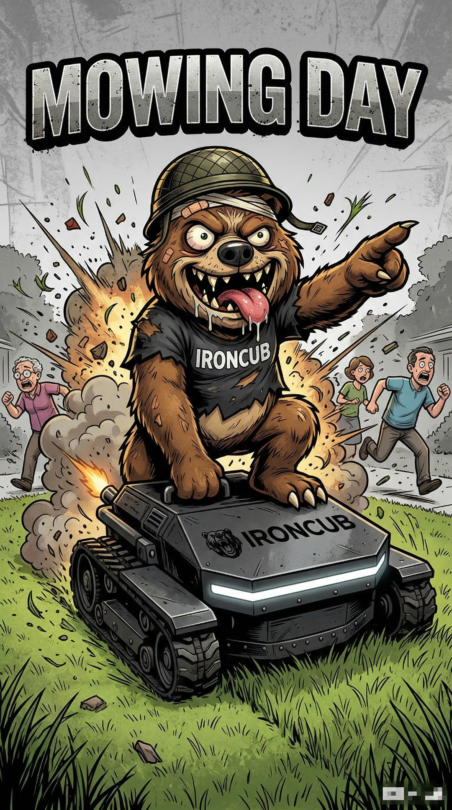

OVER ONS
The IronCub Company — Passie voor compact equipment
The IronCub Company — Passie voor compact equipment
Wij zijn de officiële Europese dealer van Rippa — een merk met 19 jaar ervaring, meer dan 8.000 machines in 70+ landen.
Vanuit onze showroom in Middelharnis bieden wij professionele skid steer loaders en compact equipment aan. Elke machine wordt met zorg gecontroleerd.

Rippa fabrieken in China, strenge kwaliteitsnormen en QC processen.
CE, ROPS/TOPS, ISO 9001 en TUV. Veiligheid staat voorop.
Showroom met werkplaats in Middelharnis. Persoonlijk contact.
Onze mascotte — kracht, betrouwbaarheid en een no-nonsense aanpak.

